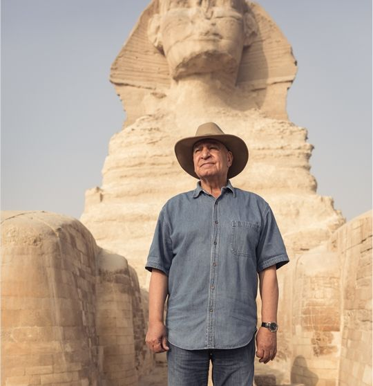

Statistics
Here are some key statistics and facts about Zahi Hawass's career and contributions:
- Years of Experience: Over 50 years in the field of archaeology.
- Excavations Led: More than 30 major archaeological excavations.
- Artifacts Repatriated: Over 5,000 stolen artifacts returned to Egypt.
- Books Published: Authored more than 40 books on Egyptology.
- TV Appearances: Featured in over 100 documentaries and TV shows.
- Lectures Given: Delivered over 500 lectures worldwide.
- Honorary Degrees: Received honorary degrees from 15 universities.
- Awards and Honors: Awarded more than 50 international awards for his contributions to archaeology.